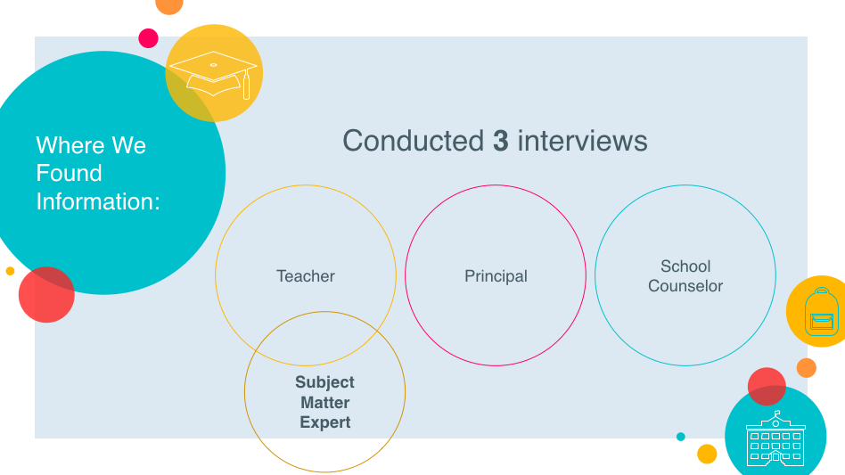
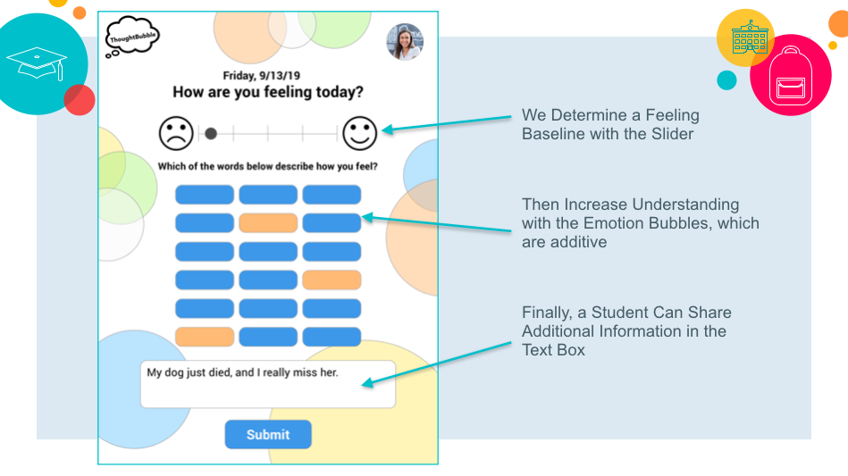
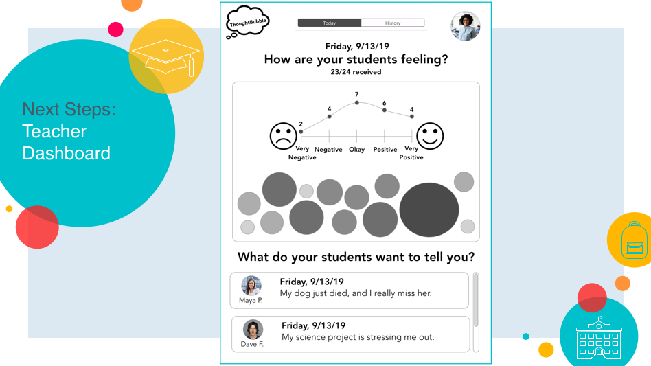

Thought Bubble is an app developed for students to use on their iPads in school to send a quick note to their teacher(s) about their thoughts or feelings that day. This app was developed in 1.5 days at a General Assembly hackathon around the topic of mental health. I worked on a collaborative team with one other developer and two UX designers. The other developer focused more on the back-end capabilities of the app and I focused on the front-end capabilites and coordinated with the UX designers to ensure cohesion for our vision.
Technologies Used
HTML5
CSS3
Node JS
Ruby on Rails
React
Process
Since this project needed to be built in less than 2 days, my team knew we had to work quickly and communicate frequently to make sure tasks were delegated appropriately so that we could divide and conquor the tasks to be done while still maintaining a cohesive vision for our app. We spent about an hour as a full group discussing and developing this project idea before splitting up to get to work. Then, the two UX designers started conducting user interviews (one of which was with me, since I am a former teacher).

While our back-end developer set up the models and built the database, the UX designers and I created a user scenario based off of our interviews and crafted a problem statement.
I also helped the UX designers create a high fidelity wireframe of the user interface and started coding the CSS to take what our back-end develper had built out and make it start to look like a finished product. Since this app was designed for use in schools and most students have access to iPads, we decided that we would design for that user interface.

We only had enough time to build out the user interface for the students, but given more time, our next steps would be to built out the interface for the teacher. Ideally, we thought it would be fantastic if the teacher could view bubbles of different sizes reflecting the number of students in a given class that selected a particular emotion as well as a list of personal thoughts students had chosen to share with their teacher.

At the end of the hackathon, we presented our project along with 7 or 8 other teams and after a brief deliberation, we were declared the winners!!! This was a great experience and I really enjoyed having the opportunity to work on a diverse team of designers and developers and found my ideal niche working as a front-end developer and being a liason between our creative UX designers and our very talented back-end developer.